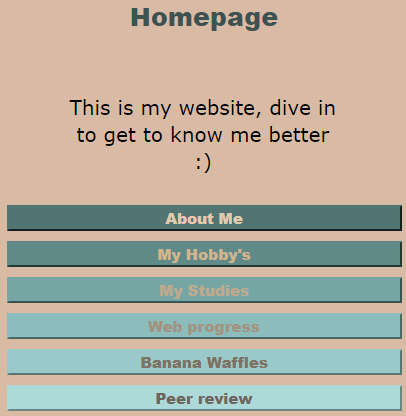

.jpg)
Here you can find Silvia's website:
Scannability
The content is organized into clear sections, each with a distinct heading, which helps in scanning the page quickly to find relevant information.
Visual Hierarchy
Each page has a clear structure with headings indicating different sections
Prominence of Important Terms
The most important terms are highlighted as headings, which are prominent and catch the reader's attention. For example, on the "About Me" page, terms like "Lil Tjay," "The Big Bang Theory," and "Melbourne" stand out as significant interests.
Clickability
It's obvious what is clickable as there's a clear indication ("Click on me to get to know me better :)" or "Click on me to go back to my picture").
Distraction/Design Noise
There doesn't appear to be excessive distraction or design noise. The content is presented in a straightforward manner without overwhelming the reader with unnecessary elements.
Side note: the Mini Banana Waffle was a little bit messed up when this review was written. An indication would be to check all containers of the page, div blocks, adapt the writing (“ ½ Teaspoon Salt”), and check the padding in CSS. as the writing was overlaying.
Text Scannability
The texts are somewhat easy to scan due to the use of clear headings and paragraphs. It’s good that the text is broken down and doesn’t appear as a solid bock of text.
Happy Talk
There are some sentences that could be considered “happy talk” ("Click on me to get to know me better :)", "Serve with the toppings of your choice and enjoy!"), however, it only adds a friendly tone which over time could only positively contribute to the aesthetic of the website.
Navigation User-Friendliness
The navigation is user-friendly as the sections are clearly labeled, and there are links provided to return to the homepage.
Prominence of Navigation
The links to return to the homepage are present. They are placed in a consistent location across all pages (top part of each page).
Consistency
The navigation links are consistent across pages, which helps to be easy to use.
Homepage Link
There is a link back to the homepage ("Click on me to go back to my picture"), which is good for navigation consistency.
'You Are Here' Indication
There isn't a clear indication of the current page or "you are here" feature. Highlighting the current section in the navigation could enhance usability.
Homepage Clarity
The homepage provides a list with all the pages, however it doesn’t provide a brief introduction to the website's purpose.
Usability Improvement Suggestions
Share your favorite sections of this page: